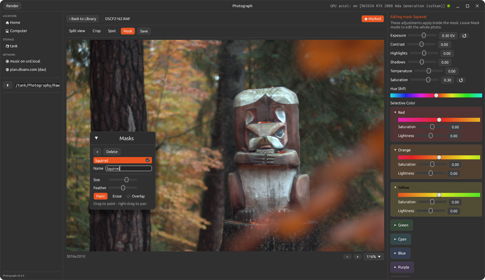

Native Desktop Photo Editor
Most photo editors are either bloated creative suites or flimsy web apps. Neither respects the simple workflow: browse a folder, tweak an image, export the result.
Photograph is a native Rust desktop photo browser and editor built for practical image management and color grading. It opens fast, handles RAW files, and stores non-destructive edits as sidecar JSON so your originals are never touched.

GitHub README • Releases • crates.io • Architecture
Download
Linux
A .deb for Ubuntu and Debian-based distributions (x86-64).
Or from a terminal:
wget https://github.com/divanvisagie/Photograph/releases/download/v0.4.4/photograph_0.4.4-1_amd64.deb
sudo apt install ./photograph_0.4.4-1_amd64.deb
Upgrading: Ubuntu's App Center shows "Installed" for a newer
.deb when any version is already installed, and won't upgrade it
(app-center#2190). Install the new version with apt instead,
from the folder you downloaded it to:
sudo apt install ./photograph_0.4.4-1_amd64.deb
Requires a Vulkan-capable GPU. Run vulkaninfo --summary to verify.
macOS
A .dmg for macOS 11 or later, on Apple Silicon and Intel.
Open it and drag Photograph to Applications. The app isn't signed by Apple, so macOS blocks it the first time: open it once, then allow it under System Settings → Privacy & Security → Open Anyway. If macOS says it's damaged, clear the download flag instead:
xattr -dr com.apple.quarantine /Applications/Photograph.appPhotograph is built and used on Linux. The macOS build is produced automatically for each release; the mounted drives and network shares in the sidebar are Linux-only.
Older versions and release notes are on the releases page.
Or install from crates.io (Rust toolchain and, on Linux, the build dependencies required):
cargo install photograph
photographWhat It Does
- Folder browser with thumbnail grid; the sidebar finds mounted drives, ZFS pools, and network shares (NFS/SMB/sshfs)
- Full image viewer/editor windows (egui/eframe)
- EXIF metadata display
- Non-destructive edits stored as sidecar JSON
- Geometry: rotate, flip, crop, straighten, keystone
- Color/tone: exposure, white balance, HSL, selective color, graduated filter, highlight/shadow recovery
- Export as JPG, PNG, or WebP with quality/compression and optional resize
- Background rendering and export progress UI
Supported Formats
RAW decode via rawler: RAF, DNG, NEF, CR2, CR3, ARW.
Standard formats via the image crate: JPG, PNG, TIFF, WebP, BMP.
The browser also recognizes HEIC and AVIF extensions where decode support is available.
Development
cargo build
cargo run --bin photograph
cargo test
Live-reload dev loop (requires cargo-watch):
cargo install cargo-watch
make devPackaging
The Makefile builds a Linux .deb.
make # list all targets
make build # build the .deb
make install # build and install the .debArchitecture
Pipeline and architecture decisions are documented in detail:
License
GPL-2.0-only. See LICENSE.